DOI: https://doi.org/10.1145/3178876.3185993
WWW '18: Proceedings of The Web Conference 2018, Lyon,
France, April 2018
We investigate the effectiveness of spectral methods in clustering multi-scale data, which is data whose clusters are of various sizes and densities. We review existing spectral methods that are designed to handle multi-scale data and propose an alternative approach that is orthogonal to existing methods. We put forward the algorithm ROSC, which computes an affinity matrix that takes into account both objects’ feature similarity and reachability similarity. We perform extensive experiments comparing ROSC against 9 other methods on both real and synthetic datasets. Our results show that ROSC performs very well against the competitors. In particular, it is very robust in that it consistently performs well over all the datasets tested. Also, it outperforms others by wide margins for datasets that are highly multi-scale.
ACM Reference
Format:
Xiang Li*, Ben Kao*, Siqiang
Luo*, and Martin Ester†. 2018.
ROSC: Robust Spectral Clustering on Multi-scale Data. In
WWW 2018: The 2018 Web Conference, April
23–27, 2018, Lyon, France. ACM, New York, NY, USA,
10 Pages. https://doi.org/10.1145/3178876.3185993
Cluster analysis is a core technique in data mining and machine learning. Given a set of objects, the general idea of clustering is to group objects that are similar into the same clusters and to separate dissimilar objects into different clusters. Among existing techniques, spectral clustering has been shown to be very effective, particularly in the fields of image segmentation [28, 36] and text mining [8].
Based on spectral graph theory, spectral clustering methods transform the clustering problem into a graph partitioning problem. Given a set of n objects $\mathcal {X} = \lbrace x_1, \ldots , x_n\rbrace$ , and a similarity matrix S, such that the matrix entry Sij captures the affinity of objects xi and xj , spectral clustering first constructs a weighted graph $G=(\mathcal {X},S)$ , where $\mathcal {X}$ gives the set of vertices and Sij gives the weight of the edge connecting xi to xj . The graph G is then partitioned with the objective of optimizing a criterion that measures the quality of the partitioning such as the normalized cut [28].
Figure 1(a) illustrates the key steps of basic spectral clustering1. Given a similarity matrix S, we first compute a normalized Laplacian matrix L from S. Then, we apply eigen-decomposition on L to obtain the k smallest eigenvectors2, e1, …, e k . Let M be an k × n matrix whose i-th row is e i . We take the j-th column of M as the feature vector of object xj and perform k-means clustering on the objects. In a nutshell, spectral clustering methods map objects into low dimensional embeddings using the k smallest eigenvectors.
Despite the successes of spectral clustering, previous works have pointed out that spectral methods can be adversely affected by the presence of multi-scale data [24, 37], which is defined as data whose object clusters are of various sizes and densities. As an illustrative example, Figure 2(a) shows a dataset of three clusters: two dense rectangular clusters on top of a narrow sparse stripe cluster. Figure 2(b) shows the result of applying the standard spectral clustering method NJW to the dataset. We see that the stripe cluster is segmented into three parts, two of which are incorrectly merged with the rectangular clusters. The objective of this paper is to address the multi-scale data issue in spectral clustering. In particular, we review existing methods for handling multi-scale data, provide insight into how the issue can be addressed, and put forward our algorithm called ROSC which outperforms existing methods in clustering multi-scale data.
There are two general approaches to address the multi-scale data problem: one on scaling the similarity matrix S and another on applying the power iteration technique to obtain pseudo-eigenvectors that contain rich cluster separation information.
Recall that spectral clustering methods model data objects as a graph and perform clustering by graph partitioning. The similarity matrix S should therefore capture objects’ local neighborhood information. A common choice of such a similarity function is the Gaussian kernel: $S_{ij}= \exp \left(-\frac{||_i-_j||^2}{2\sigma ^2}\right)$ , where x (boldface) denotes a feature vector of an object x, and σ is a global scaling parameter. A major difficulty in using the Gaussian function to cluster multi-scale data lies in the choice of σ. If σ is set small, then Sij will become small. Objects in a sparse cluster (which are relatively distant among themselves compared with objects in a dense cluster) will likely be judged as dissimilar leading to partitioning of the cluster. On the other hand, if σ is set large, Sij will be large. Hence, nearby dense clusters could be judged similar to each other and are inadvertently merged.
To tackle this problem, the ZP method [37] applies local scaling and modifies the Gaussian similarity to $S_{ij}= \exp \left(-\frac{||_i-_j||^2}{\sigma _i\sigma _j}\right)$ . Here, σi (and likewise for σj ) is a local scaling parameter for object xi . It is defined as the distance between xi and its l-th nearest neighbor for some empirically determined value l. If xi is located in a sparse cluster, then σi will be large. This boosts the similarity of xi and its neighboring objects and thus avoids the splitting of sparse clusters. Also, if xi is located in a dense cluster, σi will be small. Objects will have to be very close to be considered neighbors. This avoids the merging of nearby dense clusters.
Previous studies [1, 35] have suggested that employing more eigenvectors beyond the k smallest ones can help capture more cluster separation information and thus improve spectral clustering in handling multi-scale data. A power iteration (PI) method [27] was put forward as an efficient method for computing the dominant eigenvector of a matrix. It is observed in [19] that one can truncate the iteration process to obtain an intermediate pseudo-eigenvector v t . It is shown that v t represents a weighted linear combination of all the eigenvectors and is thus a very effective replacement of the k smallest eigenvectors typically used in a standard spectral clustering process. Figure 1(b) shows how the local-scaling method (green box) and the power iteration method (yellow box) are integrated into the basic spectral clustering method.
In this paper we take a different approach to tackle the multi-scale data problem. The core idea is to construct an n × n coefficient matrix Z such that the entry Zij 3 reflects how well an object xi characterizes another object xj . Our objective is to derive such a Z with “grouping effect”: if two objects xi and xj are highly correlated (and thus should be put into the same cluster), then their corresponding coefficient vectors z i and z j given in Z are similar. The interesting question we address is how to find such a Z.
The main feature of our algorithm ROSC is illustrated by the red box shown in Figure 1(c). Instead of using PI to obtain low dimensional embeddings of the objects as input to k-means (yellow box in Figure 1(b)), ROSC uses the embeddings to construct the matrix Z (upper path in the red box). We note that two objects that belong to the same cluster could be located at distant far ends of a cluster, their high correlation is therefore not expressed properly by a distance-based similarity matrix S. To capture the high correlation between distant objects in the same cluster, we propose to use a transitive K nearest neighbor (TKNN) graph (lower path in the red box). Two objects xi and xj are connected by an edge in the TKNN graph if there is a sequence of objects < xi , …, xj > such that adjacent objects in the sequence are mutual K nearest neighbors of each other. We use the TKNN graph to regularize the matrix Z so that it possesses the desired grouping effect. The matrix Z is then fed to the pipeline of spectral clustering, taking the role of S.
Our main contributions are:
• We address the multi-scale data problem in spectral clustering and propose the ROSC algorithm. ROSC uses PI to derive a coefficient matrix Z, which is regularized by a TKNN graph. The regularized Z replaces the similarity matrix S in the spectral clustering process.
• We mathematically prove that the regularized Z possesses the grouping effect. Hence, it is effective in improving clustering results.
• We conduct extensive experiments to evaluate the performance of ROSC against 9 other clustering methods. Our results show that ROSC performs very well against the competitors. In particular, it is very robust in that it consistently performs well over all the datasets tested. Also, it outperforms others by wide margins for datasets that are highly multi-scale.
The rest of the paper is organized as follows. Section 2 mentions related works and describes a number of key spectral clustering algorithms. Section 3 presents the ROSC algorithm. Section 4 describes the experiments and presents experimental results. Finally, Section 5 concludes the paper.
Spectral clustering is a well-studied topic. For an introduction and an analysis of the method, see [14, 26, 31]. There are a number of variants of the basic method, some of which differ in the way they normalize the graph Laplacian, D − S, where D is the diagonal matrix with Dii = ∑ j Sij . For example, the normalized cuts (NCuts) method [28] employs random-walk-based normalization D − 1(D − S) while the Ng-Jordan-Weiss (NJW) method [26] uses symmetric normalization $D^{-\frac{1}{2}}(D-S)D^{-\frac{1}{2}}$ .
There are many previous works studying the various aspects of spectral clustering techniques. For example, there are studies that focus on the performance of spectral clustering under different data characteristics [13, 32, 38], on computational efficiency [4, 5, 7, 9, 10, 34], and on the probabilistic theory of the method [16, 23, 25].
There are also works that point out the degradation of spectral clustering's effectiveness when data is multi-scale [24] or noisy [17]. To address these problems, a number of methods have been proposed [3, 6, 17, 37]. For example, the self-tuning spectral clustering method ZP [37] considers the local statistics information of each object and constructs a locally scaled similarity matrix as we have described in Section 1. Moreover, ZP estimates the number of clusters by rotating the eigenvectors to best align them with a canonical coordinate system. The number of clusters that gives the minimal alignment cost is then selected.
Standard spectral clustering uses the so-called “most informative” eigenvectors. Heuristically, the k smallest eigenvectors are usually taken as the most informative ones. However, it is pointed out in [19] that it is possible that some of these smallest eigenvectors correspond to some particularly salient noise in the data, while other non-top-k-smallest vectors contain good cluster separation information. This observation leads to studies of how eigenvectors should be selected in spectral clustering. For example, Xiang et al. [33] enhance spectral clustering by measuring the relevance of an eigenvector according to how well it can separate data into different clusters, particularly in the presence of noise.
As we mentioned in Section 1, power iteration (PI) can be used to find pseudo-eigenvectors in spectral clustering. Given a matrix W, PI starts with a random vector v0 ≠ 0 and iterates:
In the context of spectral clustering, we set W = D − 1 S. It is easy to see that the k smallest eigenvectors of D − 1(D − S) computed in NCuts are equivalent to the k largest eigenvectors of W. Lin et al. [19] propose the Power Iteration Clustering (PIC) method. PIC employs truncated power iteration to obtain an intermediate pseudo-eigenvector v t , which is shown to be a weighted linear combination of all the eigenvectors. The j-th component of v t , v t [j], is taken as the feature of object xj . Based on these feature values, k-means clustering is applied to cluster objects.
PIC uses PI to obtain one single pseudo-eigenvector from which objects’ feature values are extracted. A single pseudo-eigenvector, however, is generally not enough when the number of clusters is large due to the cluster collision problem [18]. In [18], the PIC-k method is proposed which runs PI multiple times to obtain multiple pseudo-eigenvectors. These generated pseudo-eigenvectors provide more dimensions of object features that are used in the k-means clustering step of spectral clustering. These pseudo-eigenvectors, however, could be similar to each other and are thus redundant. In [29], a Deflation-based Power Iteration Clustering (DPIC) method is proposed. DPIC applies Schur complement to generate multiple orthogonal pseudo-eigenvectors to address the redundancy issue. Another issue of the PIC method is that the more dominant eigenvectors contribute higher weights in the pseudo-eigenvector (see Equation 3). They thus overshadow the other minor but indispensable eigenvectors, especially in the case of multi-scale and noisy data. To deal with this problem, Huang et al. [12] put forward a Diverse Power Iteration Embedding (DPIE) method. In DPIE, when a new pseudo-eigenvector is generated, information of other previously obtained pseudo-eigenvectors is removed from the new one. Also, certain threshold values are wisely set to prevent minor eigenvectors from being overshadowed. Recently, a Full Spectral Clustering method FUSE [35] is proposed. It first generates p > k pseudo-eigenvectors and then uses independent component analysis (ICA) to rotate pseudo-eigenvectors so that they become pairwise statistically independent. The k rotated pseudo-eigenvectors with the most cluster-separation information are selected for clustering.
Our algorithm ROSC differs from these previous works in two aspects. First, ROSC uses PI to obtain pseudo-eigenvectors not as input to the k-means clustering step, but to construct a coefficient matrix Z which expresses how one object is characterized by other objects. Second, we propose the TKNN graph, which is derived from a locally-scaled similarity matrix S. The TKNN graph is used to regularize the matrix Z so that Z possesses the grouping effect. The matrix Z serves as input to the spectral clustering pipeline in place of the original similarity matrix S. ROSC is thus orthogonal to other existing techniques of spectral clustering.
In this section we describe our ROSC algorithm. Figure 1(c) shows a flow diagram of ROSC. ROSC follows the basic pipeline of spectral clustering except that it generates a coefficient matrix Z and feeds it into the clustering pipeline in place of the similarity matrix S. The objective is to find a Z that possesses grouping effect. To achieve that, ROSC uses PI to obtain pseudo-eigenvectors from which a basic Z is derived. Next, it generates the TKNN graph with which Z is rectified. In the following, we discuss how Z is derived from the pseudo-eigenvectors, define the TKNN graph, describe the rectification process, and prove that the resulting Z has the desired grouping effect.
Given a similarity matrix S, we normalize it by D − 1 S and apply PI to obtain pseudo-eigenvectors. Similar to [35], we run PI multiple times with different random initial vectors to generate a set of pseudo-eigenvectors, which maps each object into a low dimensional embedding. Note that small eigenvectors are shrunk by PI [19]. To alleviate the shrinkage of small eigenvectors, we follow the approach of [12] and gradually decrease the number of iterations executed in PI as more pseudo-eigenvectors are obtained.
Since the pseudo-eigenvectors approximate the most dominant eigenvector, they could be similar. To reduce this redundancy, whitening [15] is used to make the pseudo-eigenvectors uncorrelated. Moreover, noise in the pseudo-eigenvectors are reduced by a rectification process, which will be discussed later.
Our objective is to capture the high correlations between objects that belong to the same cluster even though the objects could be located at distant far ends of a cluster. These correlations are expressed via a TKNN graph, which is used to regularize the coefficient matrix Z.
(Mutual K-nearest neighbors) Let NK (x) be the set of K nearest neighbors of an object x. Two objects xi and xj are said to be mutual K-nearest neighbors of each other, denoted by xi ∼ xj , iff xi ∈ NK (xj ) and xj ∈ NK (xi ). $\Box$
(Reachability) Two objects xi and xj are said to be reachable from each other if there exists a sequence of h ≥ 2 objects $\lbrace x_i = x_{a_1}, \ldots , x_{a_h} = x_j\rbrace$ such that $x_{a_r} \sim x_{a_{r+1}}$ for 1 ≤ r < h. $\Box$
(Transitive K-nearest neighbor (TKNN) graph) Given a set of objects $\mathcal {X} = \lbrace x_1, x_2,..., x_n\rbrace$ , the TKNN graph $\mathcal {G}_K = (\mathcal {X},\mathcal {E})$ is an undirected graph where $\mathcal {X}$ is the set of vertices and $\mathcal {E}$ is the set of edges. Specifically, the edge (xi , xj ) $\in \mathcal {E}$ iff xi and xj are reachable from each other. We represent the TKNN graph by an n × n reachability matrix $\mathcal {W}$ whose (i, j)-entry $\mathcal {W}_{ij} = 1$ if (xi , xj ) $\in \mathcal {E}$ ; 0 otherwise. $\Box$
The similarity between two objects describes the degree to which they share common characteristics. The more similar they are, the more likely that one object can be represented by the other. Therefore, to depict the relationships between objects in multi-scale data, each object is linearly characterized by other objects, assuming the well-known linear subspace model [20].
We generate p pseudo-eigenvectors using PI. Let $X\in \mathcal {R}^{p\times n}$ be a matrix whose rows are the pseudo-eigenvectors. The q-th column of X can be taken as a feature vector q of an object xq . We normalize the column vectors of X such that $x_q^T x_q = 1 \; \forall 1 \le q \le n$ . We determine a coefficient matrix $Z \in \mathcal {R}^{n \times n}$ by4
As indicated by previous works [35], the generated pseudo-eigenvectors are likely to be noise-corrupted. We thus extend Equation 4 by introducing a noise matrix O, giving:
As we have explained, the TKNN graph conveys useful clustering information, bringing highly correlated objects that are located at distant far ends of a cluster together. We thus use the TKNN graph to regularize matrix Z. We derive the following objective function:
For an object xp , let z p be the p-th column of the coefficient matrix Z. We interpret the entries of z p as the coefficients that express xp as a linear combinations of other objects. Previous works [11, 21, 22] have shown that if Z has grouping effect, then performing spectral clustering based on Z would be effective. Intuitively, Z has grouping effect if, given two highly correlated objects xi and xj , their characterizations of other objects are similar. Existing works mostly consider high correlation between objects as high similarity of their feature vectors. With ROSC, we consider object similarity in terms of both feature similarity and reachability similarity. Feature similarity is measured by the objects’ feature vectors as given by the columns of matrix X. Reachability similarity is measured by the columns of matrix $\mathcal {W}$ , each of which shows the reachability of an object to all others. Formally,
(Grouping effect). Given a set of objects $\mathcal {X} = \lbrace x_1, x_2,..., x_n\rbrace$ , let w q be the q-th column of $\mathcal {W}$ . Further, let xi → xj denote the condition: (1) $x_i^T x_j \rightarrow 1$ and (2) ‖w i − w j ‖2 → 0. A matrix Z is said to have grouping effect if
Our next task is to prove that the optimal solution Z * (as given in Equation 7) has the grouping effect. In the following discussion, we use ${ z}_q^*$ to denote the q-th column vector of Z *.
Given a set of objects $\mathcal {X}$ , the matrix $X\in \mathcal {R}^{p\times n}$ that is composed of the pseudo-eigenvectors as rows, the reachability matrix $\mathcal {W}$ , and the optimal soution Z * of Equation 6,
For 1 ≤ p ≤ n, let $J({z}_p) = || {x}_p-X {z}_p||_2^2 + \alpha _1 || {z}_p||_2^2 + \alpha _2 || {z}_p- {w}_p||_2^2$ . Since Z * is the optimal solution of Equation 6, we have $\frac{\partial {J}}{\partial {Z}_{ip}}|_{ {z}_p = {z}_p^*} = 0\; \forall 1\le i \le n$ . Hence, $-2 {x}_i^T({x}_p-X {z}_p^*)+2\alpha _1Z_{ip}^*+2\alpha _2(Z_{ip}^*-\mathcal {W}_{ip}) = 0$ , which induces Equation 8.
∀1 ≤ i, j, p ≤ n,
From Equation 8, we have
Since the column vectors of X are normalized (i.e., $x_q^T x_q = 1 \; \forall 1 \le q \le n$ ) , we have $|| {x}_i - {x}_j||_2 = \sqrt {2(1-r)}$ , where $r = {x}_i^T {x}_j$ . As Z * is the optimal solution of Equation 6, we have
Matrix Z * has grouping effect.
Given two objects xi and xj such that xi → xj , we have, (1) $x_i^T x_j \rightarrow 1$ and (2) ||w i − w j ||2 → 0. These imply $r = x_i^T x_j \rightarrow 1$ and $|\mathcal {W}_{ip}-\mathcal {W}_{jp}| \rightarrow 0$ . Hence, the two terms of the numerator of the R.H.S of Equation 9 are close to 0. Therefore, $|Z_{ip}^*-Z_{jp}^*| \rightarrow 0$ and thus Z * has grouping effect.
Indeed, Equation 9 shows how our algorithm ROSC enhances the effectiveness of spectral clustering on multi-scale data. Comparing with traditional approaches, which focus on feature similarity, ROSC uses Z * to integrate feature similarity (r) with reachability similarity ($|\mathcal {W}_{ip}-\mathcal {W}_{jp}|$ ). In particular, two distant objects xi and xj of a cluster may not share a strong feature similarity. This leads to a small r and traditional approaches will likely put them into separate clusters. On the contrary, ROSC considers the strong reachability of the objects to derive a small value of $|\mathcal {W}_{ip}-\mathcal {W}_{jp}|$ , and thus keeping them in the same cluster. Moreover, for xi and xj that belong to two different dense clusters but happen to be close in space (i.e., xi and xj have strong feature similarity), traditional approaches may inadvertently merge them into the same cluster. ROSC, however, would discover their low reachability (via the mutual-KNN relation) and derive a large value of $|\mathcal {W}_{ip}-\mathcal {W}_{jp}|$ . This regulates matrix Z * and avoids the incorrect merging. As we will see in the next section, ROSC's approach greatly improves clustering quality and is more robust than other algorithms in handling multi-scale data.
We note that the matrix Z * obtained may be asymmetric and it may contain negative values. To construct a matrix of object similarity, a common fix [20, 22] is to compute $\tilde{Z} = (|Z^*|+|(Z^*)^T|)/2$ . After $\tilde{Z}$ is computed, ROSC executes a standard spectral clustering method (e.g., NCuts) using $\tilde{Z}$ as the similarity matrix in place of S. It can be proved that |Z *|, |(Z *) T |, and hence $\tilde{Z}$ all have grouping effect. Due to space limitations, readers are referred to [2] for the proofs. Finally, ROSC is summarized in Algorithm 1 .
We conducted extensive experiments to evaluate the performance of ROSC. This section summarizes our results. We compare the various methods using three popular measures, namely, purity, adjusted mutual information (AMI), and rand index (RI). These measures evaluate clustering quality and their values range from 0 to 1, with a larger value indicating a better clustering quality. Readers are referred to [19, 30] for definitions of the three measures.
We evaluate ROSC and 9 other methods. These methods are grouped into the following four categories.
•(Standard spectral clustering methods): NCuts and NJW are two standard methods we evaluate against ROSC.
•(Power iteration (PI) based methods): This group includes PIC, PIC-k , DPIC, and DPIE. They were described in Section 2.
•(Multi-scale-data-oriented methods): This group includes ZP and FUSE, which are designed to specifically handle multi-scale data. They were also discussed in Section 2. Note that ZP automatically estimates the number of clusters. For fairness, we modify ZP so that it returns k (the number of true) clusters.
•(ROSC variants): ROSC regularizes matrix Z using the reachability matrix. This is achieved via the term $||Z-\mathcal {W}||_F^2$ in Equation 6. To study the regularization effect, we modify ROSC with this term removed. Specifically, ROSC-R (reads “ROSC minus reachability”) is ROSC without the reachability component.
[Experiment settings] The parameters of all the methods are set according to their original papers. For all the datasets, we use Euclidean distance of objects’ attributes to derive S, which are locally scaled based on ZP's local scaling procedure. For ROSC, we set α 1 = 1.0, α 2 = 0.01, and we set K = 4 in constructing TKNN graphs. All methods adopt k-means as the last step to return clustering results. For this step, we run k-means 100 times with random starting centroids and the most frequent cluster assignment is used [19]. For ROSC, we generate k pseudo-eigenvectors with random starting vectors as is done in [29]. For each method and dataset, we run the experiment 50 times and report average results.
We first use two synthetic datasets to visually illustrate the performance of the various methods. After that, we use 7 real datasets to perform an in-depth analysis of the algorithms.
[Synthetic datasets]The synthetic datasets are designed to represent very difficult cases of clustering, with a highlight on multi-scale data. Figure 3(a) shows the synthetic dataset Syn1, which consists of three clusters of different sizes and densities. Specifically, there is a medium-sized sparse rectangular cluster (blue) sandwiched by a small dense circular cluster (magenta) and a large dense rectangular one (yellow). These clusters are physically very close to each other. In particular, the distance between two objects of different clusters could be smaller than the distance of two objects that belong to the same cluster.
We apply all 10 methods on Syn1. Due to space limitations, for each category of methods, we only show the best performing one. They are, namely, NJW, PIC-k, FUSE, and ROSC. Their clustering results are shown in Figures 3(b)-(e), respectively. From the figures, we see that both NJW and PIC-k can identify the small circular magenta cluster. However, the blue and the yellow rectangular clusters are chopped into halves, and these halves are incorrectly merged. FUSE fails for this dataset as well. In particular, about 1/3 of the yellow cluster is merged with the blue cluster, while about half of the blue cluster is merged with the magenta cluster. Among the four methods, ROSC is the only one that can recover the yellow cluster. This indicates the effectiveness of the TKNN graph in correlating objects that are at the far ends of the big elongated cluster. Moreover, although ROSC does not recover the complete blue cluster, a majority fraction of the blue objects are clustered by ROSC as a single group. In contrast, for the other three methods, all blue objects are either merged with those of the magenta cluster or those of the yellow cluster.
Figure 4(a) shows another synthetic dataset, Syn2, which consists of a sparse ring cluster (green) and two dense circular clusters (red and blue). The best performing methods of the 4 categories are NJW, PIC-k, ZP, and ROSC. Their clustering results are shown in Figures 4(b)-(e), respectively. From the figures, we see that the dataset is a very difficult case for existing methods. For example, with NJW and ZP, the green ring cluster is partitioned into three segments, two of which are merged incorrectly with the circular clusters. A similar situation is also seen for PIC-k. In contrast, ROSC is the only method that can recover almost the entire green cluster. It is also able to correctly identify the two circular clusters except for a small number of objects on the green ring.
Tables 1 and 2 show the purity, AMI and RI scores of all 10 methods for the datasets Syn1 and Syn2, respectively. From the tables, we see that the scores of ROSC are all much larger than those of the other methods. It thus significantly outperforms the others for these two difficult cases. The two tables also show the scores of ROSC-R, which is ROSC without using the TKNN graph or the reachability matrix for regularization. Considering the wide gaps between the scores of ROSC and ROSC-R, we see a strong positive effect of the reachability regularization. The use of TKNN graph and reachability has a significant effect in the two synthetic datasets because both datasets consist of large elongated clusters (e.g., the green ring in syn2). Objects in these clusters are at far distances from each other and their correlations are effectively captured by the reachability matrix that ROSC employs.
| Measure | NJW | NCuts | PIC | PIC-k | DPIC | DPIE | ZP | FUSE | ROSC-R | ROSC |
|---|---|---|---|---|---|---|---|---|---|---|
| Purity | 0.8000 | 0.8000 | 0.7262 | 0.7772 | 0.6663 | 0.6348 | 0.8000 | 0.7688 | 0.7594 | 0.8538 |
| AMI | 0.4338 | 0.4256 | 0.3941 | 0.4686 | 0.2502 | 0.1381 | 0.4232 | 0.4873 | 0.4331 | 0.6255 |
| RI | 0.6811 | 0.6817 | 0.6513 | 0.6901 | 0.5786 | 0.4707 | 0.6812 | 0.6837 | 0.6762 | 0.8354 |
| Measure | NJW | NCuts | PIC | PIC-k | DPIC | DPIE | ZP | FUSE | ROSC-R | ROSC |
|---|---|---|---|---|---|---|---|---|---|---|
| Purity | 0.6775 | 0.6775 | 0.6541 | 0.6849 | 0.5196 | 0.5171 | 0.6875 | 0.6773 | 0.7002 | 0.8359 |
| AMI | 0.4681 | 0.4679 | 0.4157 | 0.4740 | 0.2136 | 0.1320 | 0.4746 | 0.4554 | 0.4602 | 0.6178 |
| RI | 0.6725 | 0.6724 | 0.6477 | 0.6789 | 0.4866 | 0.4392 | 0.6780 | 0.6683 | 0.6909 | 0.8056 |
We further investigate how the various methods deal with multi-scale data by varying the sizes and densities of some clusters in the synthetic datasets. Here, we show some representative results. Specifically, we consider the middle sparse blue cluster in Syn1 (Figure 3(a)) and make two changes: (1) increase its density while keeping its size unchanged, and (2) increase its size while maintaining its density unchanged. We use Δd to denote the density change (e.g., Δd = 100% means that the density of the cluster is doubled). We change the size of the cluster by changing its length (enlarging the cluster sideway), while the height is kept unchanged. We use Δs to denote the size change (e.g., Δs = 50% means that the cluster is 1.5 times wider than the one shown in Figure 3(a)). We make similar changes to Syn2 by modifying the density and size of the ring cluster. Specifically, we gradually reduce the size of the ring from a whole ring (◯, Δs = 0%) to a lower half ring (⌣, Δs = -50%).
We show the performance scores of the 10 methods as we apply the changes in density and size to the clusters in Syn1 (Figures 5 and 6) and Syn2 (Figures 7 and 8). From the figures, we see that ROSC gives the best and the most stable performance among all the methods over the whole spectrum of test cases. The performance gaps between ROSC and other competitors are also sizable. This shows that ROSC is very robust in dealing with multi-scale data of various sizes and densities.
| Dataset | #objects | #dimensions | #clusters | size | density |
|---|---|---|---|---|---|
| COIL20 | 1440 | 1024 | 20 | 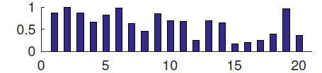 | 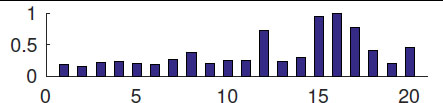 |
| seg_7class | 210 | 19 | 7 | 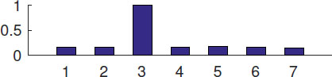 | 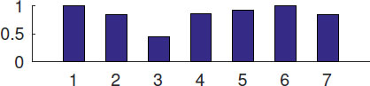 |
| glass | 214 | 9 | 6 | 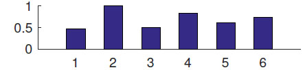 | 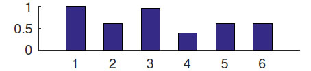 |
| MNIST0127 | 1666 | 784 | 4 | 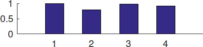 | 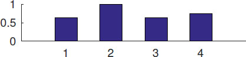 |
| isolet_5class | 300 | 617 | 5 | 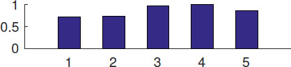 | 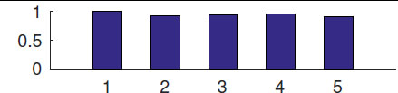 |
| Yeast_4class | 1299 | 8 | 4 | 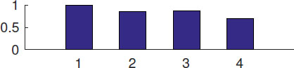 | 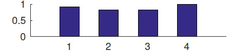 |
| Yale_5class | 55 | 1024 | 5 | 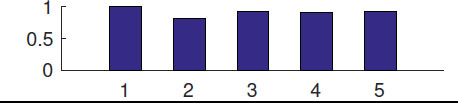 | 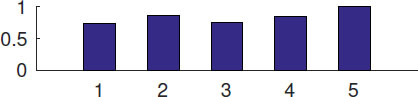 |
From Table 3, we see the dataset COIL20 is highly multi-scale. For example, cluster 2 (the largest cluster) is 5.6 times larger than cluster 15 (the smallest cluster). However, cluster 15 is 5.9 times denser than cluster 2. The dataset glass is moderately multi-scale, and Yale_5 class is relatively uniform. The dataset seg_7 class is interesting because it has one very big and sparse cluster (cluster 3); the other 6 clusters are quite uniform.
Tables 4, 5 and 6 show the purity, AMI, and RI scores of the 10 methods when they are applied to the 7 real datasets. Each row in the table corresponds to a (measure, dataset) combination — or a contest among the 10 methods. There are thus 21 (3 measures × 7 datasets) contests. For each contest, the winner's score is shown in bold type. For ROSC, its ranking in each contest is given in the bracket next to its score. The performance of a method can be judged by the column under the method spanning the three tables. From the tables, we make several observations:
| Dataset | NJW | NCuts | PIC | PIC-k | DPIC | DPIE | ZP | FUSE | ROSC-R | ROSC |
|---|---|---|---|---|---|---|---|---|---|---|
| COIL20 | 0.4115 | 0.3926 | 0.2801 | 0.2801 | 0.2361 | 0.3496 | 0.5028 | 0.4177 | 0.4715 | 0.9398 (1) |
| seg_7class | 0.5608 | 0.5403 | 0.3483 | 0.3566 | 0.3000 | 0.4756 | 0.5143 | 0.5912 | 0.6209 | 0.6636 (1) |
| glass | 0.5234 | 0.5187 | 0.4976 | 0.5029 | 0.5245 | 0.5158 | 0.5374 | 0.5390 | 0.5748 | 0.5760 (1) |
| MNIST0127 | 0.5066 | 0.4970 | 0.4975 | 0.4924 | 0.5898 | 0.4395 | 0.5066 | 0.6436 | 0.6649 | 0.6666 (1) |
| isolet_5class | 0.8120 | 0.7967 | 0.5863 | 0.5867 | 0.3033 | 0.8572 | 0.7767 | 0.7825 | 0.8495 | 0.8179 (3) |
| Yeast_4class | 0.4819 | 0.4665 | 0.4428 | 0.4557 | 0.3831 | 0.4671 | 0.4819 | 0.4999 | 0.4877 | 0.4933 (2) |
| Yale_5class | 0.5273 | 0.5091 | 0.4516 | 0.4596 | 0.4000 | 0.5225 | 0.5091 | 0.5458 | 0.5295 | 0.5455 (2) |
| Dataset | NJW | NCuts | PIC | PIC-k | DPIC | DPIE | ZP | FUSE | ROSC-R | ROSC |
|---|---|---|---|---|---|---|---|---|---|---|
| COIL20 | 0.4718 | 0.4258 | 0.2989 | 0.2781 | 0.2507 | 0.3642 | 0.5702 | 0.4448 | 0.5291 | 0.9682 (1) |
| seg_7class | 0.5043 | 0.4603 | 0.2339 | 0.2385 | 0.0915 | 0.3954 | 0.4298 | 0.5049 | 0.5255 | 0.5730 (1) |
| glass | 0.3469 | 0.3465 | 0.3162 | 0.3193 | 0.2807 | 0.2683 | 0.3426 | 0.2589 | 0.3137 | 0.3204 (4) |
| MNIST0127 | 0.4353 | 0.4241 | 0.3623 | 0.3822 | 0.3714 | 0.2059 | 0.4219 | 0.4125 | 0.4920 | 0.4826 (2) |
| isolet_5class | 0.7595 | 0.7204 | 0.5280 | 0.5292 | 0.0489 | 0.7481 | 0.7379 | 0.6516 | 0.7356 | 0.7524 (2) |
| Yeast_4class | 0.1173 | 0.1052 | 0.1081 | 0.1165 | 0.0214 | 0.1318 | 0.1138 | 0.1816 | 0.1503 | 0.1582 (2) |
| Yale_5class | 0.3121 | 0.3321 | 0.2357 | 0.2320 | 0.1468 | 0.3305 | 0.2788 | 0.3495 | 0.3201 | 0.3448 (2) |
| Dataset | NJW | NCuts | PIC | PIC-k | DPIC | DPIE | ZP | FUSE | ROSC-R | ROSC |
|---|---|---|---|---|---|---|---|---|---|---|
| COIL20 | 0.7303 | 0.6245 | 0.4940 | 0.4481 | 0.7737 | 0.6114 | 0.8534 | 0.7424 | 0.8264 | 0.9923 (1) |
| seg_7class | 0.8242 | 0.7962 | 0.4830 | 0.5000 | 0.7212 | 0.7162 | 0.8208 | 0.8210 | 0.8357 | 0.8549 (1) |
| glass | 0.6890 | 0.6880 | 0.6808 | 0.6851 | 0.6556 | 0.6281 | 0.6949 | 0.6693 | 0.7036 | 0.7054 (1) |
| MNIST0127 | 0.5683 | 0.5459 | 0.5941 | 0.5887 | 0.6598 | 0.4648 | 0.6018 | 0.7022 | 0.7382 | 0.7388 (1) |
| isolet_5class | 0.9058 | 0.8942 | 0.7288 | 0.7296 | 0.6792 | 0.9123 | 0.8993 | 0.8695 | 0.9016 | 0.9001 (4) |
| Yeast_4class | 0.6046 | 0.5929 | 0.5643 | 0.5733 | 0.5770 | 0.5037 | 0.6201 | 0.6346 | 0.6405 | 0.6405 (1) |
| Yale_5class | 0.7626 | 0.7519 | 0.6772 | 0.6843 | 0.6846 | 0.7542 | 0.7600 | 0.7363 | 0.7578 | 0.7667 (1) |
(O1): Among the 21 contests, standard spectral clustering methods (NJW, NCuts) win only 2 times (AMI-glass-NJW and AMI-isolet_5 class-NJW). PI-based methods (PIC, PIC-k, DPIC, DPIE) also win only 2 times (purity-isolet_5 class-DPIE and RI-isolet_5 class-DPIE). These two categories of methods, which are not designed to specifically handle multi-scale data, are generally not outstanding.
(O2): The multi-scale-data-oriented methods (ZP, FUSE) win 4 times. In fact, if we take away ROSC, then (ZP, FUSE) win 14 times of the 21 contests. They are thus fairly effective in clustering multi-scale data. However, with a head-to-head comparison between ZP and FUSE, we see that among the 21 contests, ZP wins 9 times while FUSE wins 12 times. In some cases, there are big gaps in their performance scores. For example, for the contest (AMI-COIL20), ZP beats FUSE 0.5702 to 0.4448; for (AMI-Yale_5 class), FUSE outscores ZP 0.3495 to 0.2788. There is also a case (AMI-isolet_5 class) in which FUSE (0.6516) loses significantly to the basic NJW method (0.7595). We thus see that although ZP and FUSE generally perform well for multi-scale data, they are not very robust in providing consistently good performances across the datasets.
(O3): ROSC is winner 12 times and is first runner-up 6 times. Moreover, for those cases that ROSC does not win, its score is very close to that of the winner. For example, ROSC ranks 4th in (RI-isolet_5 class). Its score (0.9001), however, is quite close to that of the winner DPIE (0.9123). We thus see that ROSC is generally the best performer among all the 10 methods and it is very robust across the 7 datasets tested.
(O4): For COIL20, ROSC outperforms other methods by very wide margins. For example, in terms of purity, ROSC scores 0.9398, which is much better than NJW (0.4115), DPIE (0.3496), and FUSE (0.4177). From Table 3, we see that COIL20 is highly multi-scale. The results thus highlight the ability of ROSC in clustering multi-scale data. From the cluster size distribution, we see that there are clusters in COIL20 that are much bigger than others. Objects in these big clusters can thus be very distant from each other and hence their feature similarities are small. Their correlations are alternatively captured by ROSC using the TKNN graph and the derived reachability matrix. To see the effectiveness of this approach, we compare the scores of ROSC against those of ROSC-R, which does not use the reachability matrix to regularize Z. From Tables 4, 5, 6, we see big differences in the scores of ROSC and ROSC-R for the rows of COIL20. This verifies the importance of the TKNN graph in regularizing Z.
[Grouping effect]We showed in Lemma 7 that the rectified matrix Z * and hence $\tilde{Z}$ have the desired grouping effect. Figure 9 visually compares the original similarity matrix S and $\tilde{Z}$ for COIL20. Each figure displays values in a matrix by pixel brightness. Rows and columns in the matrix are reordered by gold-standard clusters. From Figure 9(b), we see a clear well-defined block diagonal matrix with 20 sub-blocks. Compared with the fuzzy display of S in Figure 9(a), we see that $\tilde{Z}$ is much more effective in spectral clustering. This explains the excellent performance of ROSC in clustering COIL20. [TKNN graph]We end this section with a further discussion on the TKNN graph regularizing matrix Z (via the reachability matrix $\mathcal {W}$ ). From Equation 6, we see that the degree of such regularization is controlled by the parameter α 2. The larger α 2 is, the more dominant is the TKNN graph regularization in the objective function. Figures 10(a) and (b) show the performance scores of ROSC as α 2 varies for the dataset COIL20 and glass, respectively. Note that the x-axes are shown in log scale. We note that trends of the curves in the two figures are quite different: For COIL20, the performance drops when α 2 is very small, while for glass, it is the other way round. The reason is that COIL20 is highly multi-scale (see Table 3). In particular, there are very big clusters whose objects could be at large distances from each other. The TKNN graph has the effect of capturing the reachability similarities of these objects despite their weak feature similarities, and hence maintain their strong correlations. At very small α 2, the regularization effect is given too small a weight for it to be effective, leading to smaller performance scores. For glass, the dataset is much less multi-scale. The performance of ROSC stays very stable over a range of α 2 values until α 2 becomes very large, in which case, reachability similarity over-dominates feature similarity, resulting in a mild dip in performance.
In this paper we studied the effectiveness of spectral clustering methods in handling multi-scale data. We discussed the traditional approaches of locally scaling the similarity matrix and power-iteration-based techniques. We described the methods ZP and FUSE, which were previously proposed to cluster multi-scale data. We pointed out that these existing approaches focus on measuring the correlations of objects via feature similarity. However, for data with various sizes and densities, objects that belong to the same big cluster could be at substantial distances from each other. Feature similarity could fail in this case. In view of this, we proposed ROSC, which computes an affinity matrix $\tilde{Z}$ that takes into account both feature similarity and reachability similarity. In particular, $\tilde{Z}$ is obtained by regularizing a primitive affinity matrix with a TKNN graph. We mathematically proved that $\tilde{Z}$ has the desired grouping effect, which makes it a very effective replacement of the similarity matrix S used in spectral clustering. We conducted extensive experiments comparing the performance of ROSC against 9 other methods. Our results show that ROSC provides very good performances across all the datasets, both real and synthetic, we tested. In particular, for cases where the datasets are highly multi-scale, ROSC substantially outperforms other competitors. ROSC is therefore a very robust solution for clustering multi-scale data.
This research is supported by Hong Kong Research Grants Council GRF HKU 17254016.
1There are a number of variants of spectral clustering methods. Our description here is based on the NJW method [26]. More details will be presented in Section 2.
2We say that an eigenvector e i is smaller than another eigenvector e j if e i ’s eigenvalue is smaller than that of e j ’s.
3Given a matrix M, we use a pair of subscripts to specify an entry of M.
4We will regularize Z to avoid the trivial solution of Z being the identity matrix.
This paper is published under the Creative Commons Attribution 4.0 International (CC-BY 4.0) license. Authors reserve their rights to disseminate the work on their personal and corporate Web sites with the appropriate attribution.
WWW '18, April 23–27, 2018, Lyon, France
© 2018; IW3C2 (International World Wide Web Conference
Committee), published under Creative Commons CC-BY 4.0
License.
ACM ISBN 978-1-4503-5639-8/18/04.
DOI: https://doi.org/10.1145/3178876.3185993